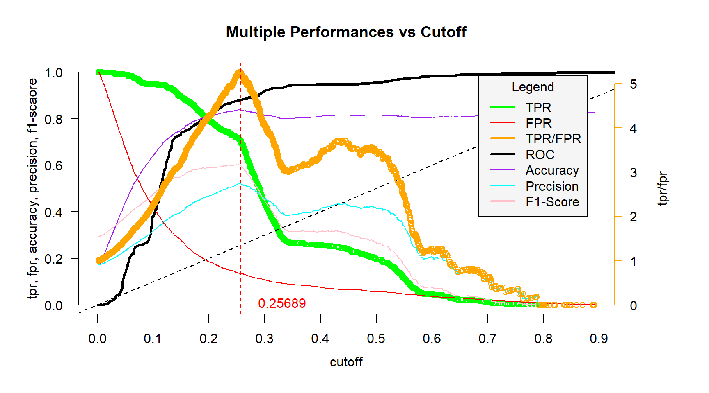

11.9 Performance Measurement
There are many performance measurement used for binary classification. Here are the rules of thumb which one to use:
- Recall: If you dont mind getting some inaccurate result, as long as you get as much correct ones
- Precision: If you demand rate of correctness and willing to reject some correct results
- F1 Score: For a more balanced measurement, taking into consideraton both recall and precision
11.9.1 Confusion Matrix
Confusion Matrix and Performance Measurement
11.9.1.1 Accuracy
- Accuracy answers the question: From the total samples, how many had been correctly predicted by the model ?
- \(Accuracy = \frac{TP+TN}{TP+TN+FP+FN}\)
- This measurement is useful when the both classes are balanced (that is, the number of TP and TN cases are almost balanced)
- In practice, it seems that the best accuracy is usually achieved when the cutpoint is near the Probability(actual TRUE)
- Accuracy is completely usessless in highly skewed class. For example, with a disease that only affects 1 in a million people a completely bogus screening test that always reports negative will be 99.9999% accurate
11.9.1.2 Recall
- Recall answers the question: Out of all actual positive samples, how many were correctly predicted by classifiers ?
- \(Recall = \frac{TP}{TP+FN}\)
11.9.1.3 Precision
- Precison answers the question: Out of all the samples classifier predicted as positive, what fraction were correct ?
- \(Precision = \frac{TP}{TP+FP}\)
11.9.1.4 F1 Score
- F1 score is the harmonic mean of Precision and Recall. Intuitively, F1 Score is the weighted average of Precision and Recall. It takes into account all three measures: TP, FP and FN
- \(Precision = 2*\frac{Recall * Precision}{Recall + Precision}\)
- F1 is usually more useful than accuracy, especially if you have an unbalanced class distribution
11.9.2 Performance related to Logistic Regression
11.9.2.1 Area Under ROC (AUROC)
- ROC curve is basically a graph of TPR vs FPR (some refer to as Recall vs (1-Sensitivity), plotted for different thresholds
- Comparing two different models, the model with higher AUROC is considered to have higher overall Accuracy
- AUROC (Area Under ROC) measures :
- AUC of 0.5: means the model is as good as tossing a coin, worthless
- AUC of 1.0: means for all cutoff points, TPR=1 and FPR=0. Intuitively it means, all samples had been correctly classified into TP (TPR=1) and TN(FPR=0), and there is no FP and FN. Ultiamtely it means Accuracy is 100%
- AUC of 0.5: means the model is as good as tossing a coin, worthless

AUROC and Thresholds
11.9.2.2 Cutoff Threshold Impact
Cutoff threshold direclty influence the value of TP, FP, TN, FN.
If cutoff threshold is lowered (lower probability to classify as Postive), the results are:
- More linient and hence more samples will be classified as Positive
- More predicted Positives means more TP and FP, hence TPR and FPR increases
- However, TPR and FPR increases at different rate:
- If TPR increases faster than FPR -> this is good, as the lowered threshold generated more TP than FP
- If FPR increases faster then TPR -> this is not good, as the lowered threhsold generated more FP than TP
- If TPR increases faster than FPR -> this is good, as the lowered threshold generated more TP than FP
- The cutoff with highest TPR/FPR value is the optimal means optimum point whereby It is possible to discover the optimum cutoff by finding the cutoff with highest TPR/FPR
Different threshold produces different performance metrics (Accuracy, Recall, Precision and Specificity and F1-score). As an example, picture below shows how threshold influences the ROC curve.

Threshold and ROC
The only way to estimate the optimum threshold for each of the performance measurement will be to measure them for a wide range of threshold.
11.9.2.3 Cutoff Visualization
Selecting a cutoff threshold depends on the objectives of the researcher. To help understanding the how cutoff changes the performance metircs, try visualize them in below graph:
1.Threshold vs Accuracy
2.Threshold vs Recall (TPR)
3.Threshold vs TPR/FPR
4.Threshold vs Precision
5.Threshold vs F1 Score
6.ROC Curve (TPR vs FPR)
11.9.3 Model Evaluation
11.9.3.1 Compare With Baseline
In an highly unbalanced dataset (eg. patients that is diagnosed with cancer skewed towards negative). Hence, it is essential to make a lazy baseline comparison with simply classifying every records with negative (cutoff at 1) or positive (cutoff at 0).
Put in mind of the dataset used for comparison:
- Use data from training set as model baseline, when concerning training performance
- Use dta from test set as model baseline, when concerning test performance
Model Accuracy is not better than lazy baseline !
- In highly bias class, in term of accuracy, the model usually unable to outperform the baseline by good marign
- Hence accuracy is not a good measurement in such case
- Model is still useful if the research objective is towards other measurement usch as recall, precision
- Adjust the threshold to achieve optimum better objectives
11.9.3.2 Combination of Variables
Model AIC to measure the usefullness. It is like R-square in linear regression. Use it to compare model with different combinations of variables.
Since logistic regression is a actual linear regression of ln(odds), multicolinearity rule apply.
11.9.4 Run The Code
11.9.4.1 General Function
This is a custom general function to evaluate all key metrics for Classification.
eval.bincalss ( score=NULL, label=NULL, cutoff=NULL)
score: predicted value, either probability or binary
label: actual value
cutoff: threshold (0-1) if score is probability
eval.binclass = function(score = NULL, label = NULL, cutoff = NA) {
actual = factor(as.logical(as.integer(as.character(label))), levels = c(TRUE, FALSE))
if (is.na(cutoff))
predicted = factor(as.logical(as.integer(as.character(score))), levels = c(TRUE, FALSE)) # binary
else
predicted = factor(as.logical(score > cutoff), levels = c(TRUE, FALSE)) # regression
ct = table(actual, predicted, useNA = 'no', exclude = c(NA)) #confusion table
tp = ct[1]
fp = ct[2]
fn = ct[3]
tn = ct[4]
accuracy = (ct[1] + ct[4]) / (sum(ct))
recall = ct[1] / (ct[1] + ct[3])
precision = ct[1] / (ct[1] + ct[2])
fpr = ct[2] / (ct[2] + ct[4])
specificity = ct[4] / (ct[2] + ct[4])
tpr_fpr = recall / (1 - specificity)
fscore = 2 * (precision * recall / (precision + recall))
data.frame(cutoff = cutoff, accuracy = accuracy, recall = recall, precision = precision,
specificity = specificity, fscore = fscore, fpr = fpr, tpr_fpr = tpr_fpr,
tp = tp, fp = fp, fn = fn, tn = tn)
}11.9.4.2 ROCR::Construct the Performance Metric
ROCR::predictionis the main function to crate prediction object that contains key data such as thresholds, TP, FP, TN, FP. With these data points, we can plot and calculate multiple performacne and visualization.
It takes only two inputs:
1. Score (probability of being POSITIVE)
2. Label (actual POSITVE)
rocr.pred = prediction(pred.logit.test, test$left)
rocr.metrics = data.frame(
cutoff = rocr.pred@cutoffs[[1]],
accuracy = (rocr.pred@tp[[1]] + rocr.pred@tn[[1]]) / (rocr.pred@tp[[1]] + rocr.pred@tn[[1]] + rocr.pred@fp[[1]] + rocr.pred@fn[[1]]),
tpr = rocr.pred@tp[[1]] / (rocr.pred@tp[[1]] + rocr.pred@fn[[1]]),
fpr = rocr.pred@fp[[1]] / (rocr.pred@fp[[1]] + rocr.pred@tn[[1]]),
ppv = rocr.pred@tp[[1]] / (rocr.pred@tp[[1]] + rocr.pred@fp[[1]])
)
rocr.metrics$fscore = 2 * (rocr.metrics$tpr * rocr.metrics$ppv) / (rocr.metrics$tpr + rocr.metrics$ppv)
rocr.metrics$tpr_fpr = rocr.metrics$tpr / rocr.metrics$fpr11.9.4.3 ROCR::List The Performance Table
The code below discover the optimum threshold for few metrices. Threhold for the highest estiamtes is summarized.
## discovery the optimal threshold for various metrics
rocr.best = rbind(
best.accuracy = c(max = max(rocr.metrics$accuracy, na.rm = TRUE), cutoff = rocr.metrics$cutoff[which.max(rocr.metrics$accuracy)]),
best.ppv = c(max = max(rocr.metrics$ppv, na.rm = TRUE), cutoff = rocr.metrics$cutoff[which.max(rocr.metrics$ppv)]),
best.recall = c(max = max(rocr.metrics$tpr, na.rm = TRUE), cutoff = rocr.metrics$cutoff[which.max(rocr.metrics$tpr)]),
best.fscore = c(max = max(rocr.metrics$fscore, na.rm = TRUE), cutoff = rocr.metrics$cutoff[which.max(rocr.metrics$fscore)]),
best.tpr_fpr = c(max = max(rocr.metrics$tpr_fpr, na.rm = TRUE), cutoff = rocr.metrics$cutoff[which.max(rocr.metrics$tpr_fpr)])
)
kable(rocr.best)| max | cutoff | |
|---|---|---|
| best.accuracy | 0.8383333 | 0.2564513 |
| best.ppv | 0.5214797 | 0.2564513 |
| best.recall | 1.0000000 | 0.0073737 |
| best.fscore | 0.6031102 | 0.2490565 |
| best.tpr_fpr | 5.2584316 | 0.2564513 |
11.9.4.4 ROCR::Visualize The Data and Performance
Plot TP, Tn, FP and FN
These data are available in the ROCR::prediction object.
plot (rocr.pred@cutoffs[[1]], rocr.pred@tp[[1]],xlim=c(0,1), ylim=c(0,12000), col='green')
lines(rocr.pred@cutoffs[[1]], rocr.pred@tn[[1]], xlim = c(0, 1), ylim = c(0, 12000),col='red')
lines(rocr.pred@cutoffs[[1]], rocr.pred@fp[[1]], xlim = c(0, 1), ylim = c(0, 12000), col='blue')
lines(rocr.pred@cutoffs[[1]], rocr.pred@fn[[1]], xlim = c(0, 1), ylim = c(0, 12000),col='orange')
legend("top",
inset = .05, cex = 1, title = "Legend",
c("TP", "TN", "FP","FN"), horiz = TRUE,
lty = c(1, 1), lwd = c(2, 2),
col = c("green", "red", "blue",'orange'), bg = "grey96")Plot ROC Curve
We can build a ROCR::performance object, and plot it !
AUC is calculated with ROCR::performance as well.
rocr.perf = performance(rocr.pred, measure = "tpr", x.measure = "fpr")
rocr.auc = as.numeric(performance(rocr.pred, "auc")@y.values)
plot(rocr.perf,
lwd = 3, colorize = TRUE,
print.cutoffs.at = seq(0, 1, by = 0.1),
text.adj = c(-0.2, 1.7),
main = 'ROC Curve')
mtext(paste('auc : ', round(rocr.auc, 5)))
abline(0, 1, col = "red", lty = 2)
Plot Accuracy
rocr.perf = performance(rocr.pred, measure = "acc")
best.x = rocr.perf@x.values[[1]][which.max(rocr.perf@y.values[[1]])]
best.y = max(rocr.perf@y.values[[1]])
plot(rocr.perf, main = 'Accuracy vs Cutoff', xlim = c(0, 1), ylim = c(0, 1))
abline(v = best.x, col = 'red', lty = 2)
abline(h = best.y, col = 'red', lty = 2)
text(best.x + 0.1, 0.05, round(best.x, 5), col = "red")
text(0.05, best.y + 0.05, round(best.y, 5), col = "red")
Plot Precesion
rocr.perf = performance(rocr.pred, measure = "prec")
best.x = rocr.perf@x.values[[1]][which.max(rocr.perf@y.values[[1]])]
best.y = max(rocr.perf@y.values[[1]][is.finite(rocr.perf@y.values[[1]])])
plot(rocr.perf, main = 'Precision vs Cutoff', xlim = c(0, 1), ylim = c(0, 1))
abline(v = best.x, col = 'red', lty = 2)
abline(h = best.y, col = 'red', lty = 2)
text(best.x + 0.1, 0.05, round(best.x, 5), col = "red")
text(0.05, best.y + 0.05, round(best.y, 5), col = "red")
Plot Multiple Metrices Into One Graph
As we can see, ROCR::performance is good to build measure and plot for single y-axis measurement. It unfortunately does not support plotting multiple y-axis into one graph. Threfore, we shall build the plot using metrices table constructed earlier (variable rocr.metrics).
### set initial margin of the plot
par(mar = c(5, 5, 4, 6))
## plot graph on left hand side scale
plot(rocr.metrics$cutoff, rocr.metrics$tpr, axes = FALSE,, ylab = '', xlab = '', col = 'green', main = 'Multiple Performances vs Cutoff', ylim = c(0, 1))
lines(rocr.metrics$cutoff, rocr.metrics$fpr, col = 'red', ylim = c(0, 1))
axis(1, pretty(range(rocr.metrics$cutoff[is.finite(rocr.metrics$cutoff)]), 10))
axis(2, ylim = c(0, 1), col = "black", las = 1) ## las=1 makes horizontal labels
lines(rocr.metrics$fpr, rocr.metrics$tpr, lwd = 3, col = 'black', ylim = c(0, 1), xlim = c(0, 1))
lines(rocr.metrics$cutoff, rocr.metrics$accuracy, col = 'purple', ylim = c(0, 1), xlim = c(0, 1))
lines(rocr.metrics$cutoff, rocr.metrics$ppv, col = 'cyan', ylim = c(0, 1), xlim = c(0, 1))
lines(rocr.metrics$cutoff, rocr.metrics$fscore, col = 'pink', ylim = c(0, 1), xlim = c(0, 1))
abline(0, 1, lty = 2, col = 'black')
## plot graph on right hand side scale
par(new = TRUE)
plot(rocr.metrics$cutoff, rocr.metrics$tpr_fpr, axes = FALSE, ylab = '', xlab = '', col = 'orange')
axis(4, col = "orange", las = 1) ## las=1 makes horizontal labels
best = rocr.metrics$cutoff[which.max(rocr.metrics$tpr_fpr[is.finite(rocr.metrics$tpr_fpr)])]
abline(v = best, col = 'red', lty = 2)
text(best + 0.075, 0.05, round(best, 5), col = "red")
## axis labels
mtext("cutoff", side = 1, col = "black", line = 2.5)
mtext("tpr, fpr, accuracy, precision, f1-scaore", side = 2, col = "black", line = 2.5)
mtext("tpr/fpr", side = 4, col = "black", line = 2.5)
## legend
legend("topright",
inset = .05, cex = 1, title = "Legend",
c("TPR", "FPR", "TPR/FPR", "ROC", "Accuracy", "Precision", "F1-Score"),
horiz = FALSE, lty = c(1, 1), lwd = c(2, 2),
col = c("green", "red", "orange", 'black', 'purple', 'cyan', 'pink'), bg = "grey96")